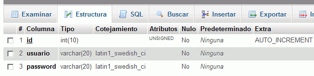
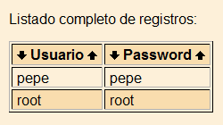
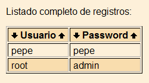

Descomprimir el archivo comprimido registro.zip en la carpeta registro. La aplicación se abre en el navegador con la dirección registro/index.php. Cuando esté configurada la base de datos, el programa hará lo siguiente:
El programa pide un nombre de usuario y una contraseña:
Si el usuario no está registrado, le dice que no está registrado.
Si el usuario está registrado y la contraseña no es correcta, le dice que la contraseña no es correcta.
Si el usuario y la contraseña es correcta, le deja entrar en la aplicación.
Si el usuario que ha entrado es el usuario root, puede ver la lista de usuarios o desconectarse.
Si el usuario que ha entrado es otro usuario, sólo puede desconectarse.
2. Creación de la base de datos
Entrar en phpMyAdmin como usuario root y crear un usuario de MySQL con nombre iwb_registro_1, contraseña iwb_registro_1 y base de datos iwb_registro_1.
Entrar en phpMyAdmin como usuario iwb_registro_1 y crear en la base de datos iwb_registro_1 la tabla usuarios con los siguientes campos:
id INTEGER UNSIGNED NOT NULL AUTO_INCREMENT
usuario VARCHAR(20)
password VARCHAR(20),
PRIMARY KEY(id)
Hacer una captura de pantalla donde se vea la estructura de la tabla y guardarla como phpmyadmin-1.png:

Insertar dos registros en la tabla usuarios:
usuario: root. password: root.
usuario: pepe. password: pepe.
Entrar en la aplicación registro como usuario root y mostrar la lista de usuarios. Hacer una captura de la pantalla y guardarla como phpmyadmin-2.png:

Entrar en phpMyAdmin y cambiar la contraseña del usuario root a admin.
Entrar en la aplicación registro como usuario root y mostrar la lista de usuarios. Hacer una captura de la pantalla y guardarla como phpmyadmin-3.png:

3. Crear una copia de seguridad
Entrar en phpMyAdmin como usuario iwb_registro_1, elegir la base de datos iwb_registro_1 y exportar la tabla con el método rápido al fichero iwb_registro_1.sql.